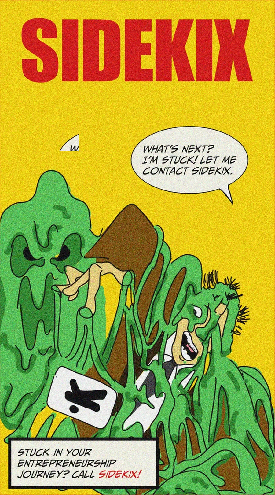

PartnersCollaboration is what
Collaboration is what
builds community.
Three ways to work with us, each with a different shape. Pick the one that fits and we will take it from there.
You get discovered by people who need exactly what you do.
- Your business surfaces in Kix suggestions when a member's situation matches what you offer
- An exclusive member discount listed in the community classifieds
- Referral tracking, so you see what the relationship is actually worth
- No cost to join and no exclusivity
You help build the thing, and the thing carries your name.
- Co-created workshops, trainings and content, credited to you
- Your offering integrated into the member journey rather than bolted on
- A say in long-term programmes for entrepreneur education and access
- Named on this page and in the product
You fund the work and get seen doing it.
- Fund an event, a programme or a campaign and put your name on it
- In-app and on-site placement where members are already looking
- Co-branded experiences built with our team
- Reporting on reach, not vanity numbers
What we are building, in two minutes.
Who is already here
National affiliates
- Amplemarket
- Apollo
- AspenTechLabs
- BILL
- Beehiiv
- Capsule
- Carta
- Catalyst
- Clearco
- Contractor Foreman
- ElevenLabs
- FreshBooks
- Google Workspace
- Gusto
- HealthRx
- Housecall Pro
- Instantly.AI
- KrispCall
- Leadpages
- Make
- Optery
- Printify
- ProDevs
- Rewarx Studio AI
- ShadowGPS
- Shopify
- Smart Tracking
- Trainual
- Unitel
- WhatConverts
- ZenBusiness
- airSlate
- folk
- monday.com
Partners
Right to StartSecond Order StudioSelf Help Credit UnionZapier
Local, Wilmington NC
BlueTone MediaBridge to WilmingtonCape Fear Community CollegeK Starr CoachingUNCW
Ready when you are.
Tell us which of the three fits and a little about what you do. We reply to every one.